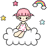
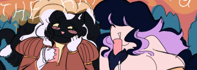
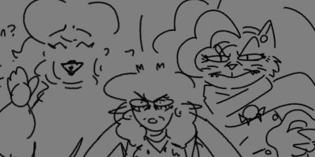

Cassiopeia

A princess to her loved ones, even if she isn't by right. Her throne being only the comfiest of beds you can imagine. One can say she hails from Dreamland itself, knowing a thing or two on helping people get there. She takes on the adventurer's pursuit in the name of curiosity, of wonder, and love. For what could life be but a wonderful dream.

Personality
ah babababa
History
Hails from a society of dreamweavers.
Leaves out of discontent with how her society handles dreams. Uses it as a chance to finally pursue a curiosity of hers.
Relations

She gave Tara The Big Gay. Man I gotta elaborate on this.

As one of Lalowe's, Appointed Aunties, she will shower her in gifts on the holidays, like any cool aunt should. Lalowe also trusts her enough, along with Tara, that she drug them into a certified Lalowe Quest to find Sandy, while confusing for Cassie, she did get to witness Lalowe's first killstreak!
Val, with Cassie being a magic user and healer that would occasionally hop along for some lighter questing, they are decent friends! Though on a quest where Val was miserably low energy, they did end up having sex out of desperation, and while it worked, the post nut clarity left both of them feeling really fucking weird and bad about it. They never speak on this.
Moth Gives them the distance they ask for with no issue, but does make an effort to occasional treat them to things like stars to gently glitter in their tent and the like. She likes them.